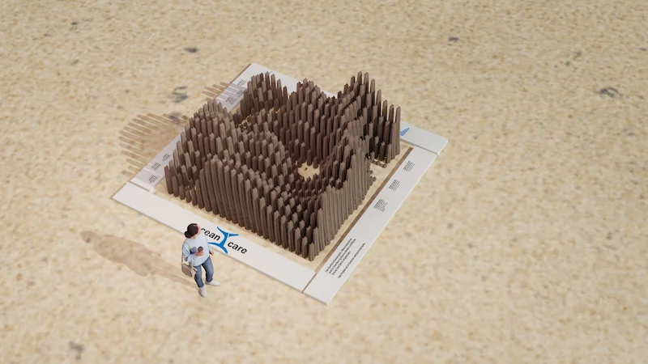
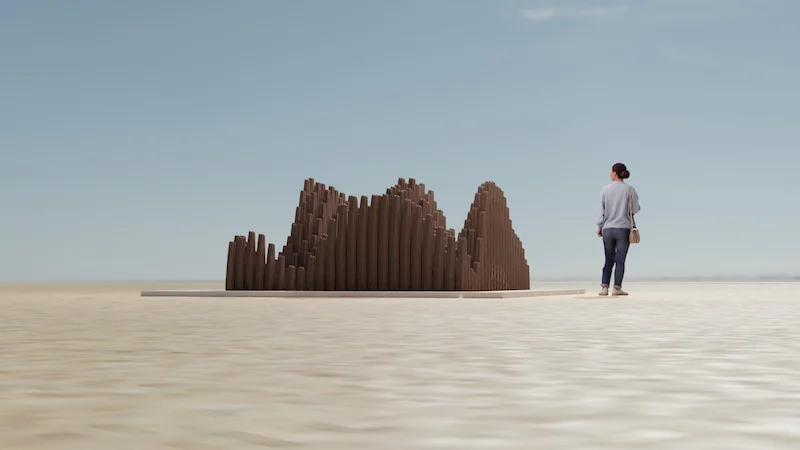
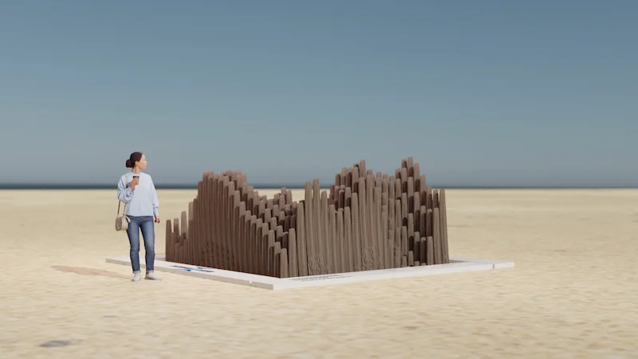
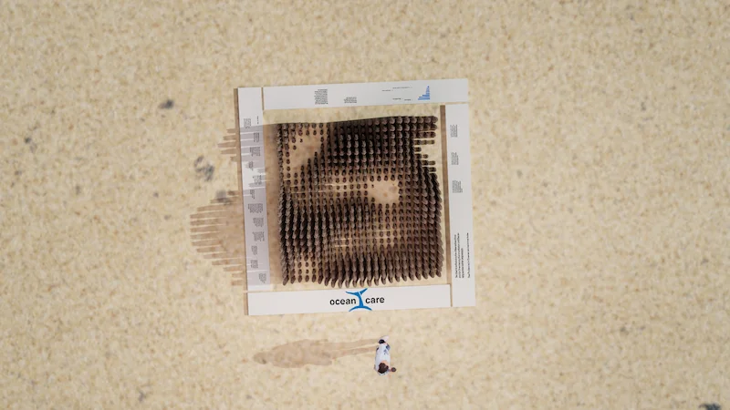

Challenge
Sea animals rely on their hearing for orientation, communication and catching prey - the problem is that noise in the oceans is getting louder and louder.
Constant noise caused by shipping, for example, occurs in around 96 percent of European coastal waters.
Solution
The installation is intended to raise awareness of the issue of underwater noise and encourage viewers to reflect on it.
To this purpose, I thought about how I could visualize the noise and at the same time show the extent of the problem.
Output
The installation consists of several vertically positioned wooden beams.
The height of the beams varies as they represent the waveform of a sonar signal.
To make the installation as sustainable as possible, it could be made from driftwood or old beams and machined to the appropriate size.
The beams are illuminated differently by the movement of sunlight, highlighting the variety of the beams.

